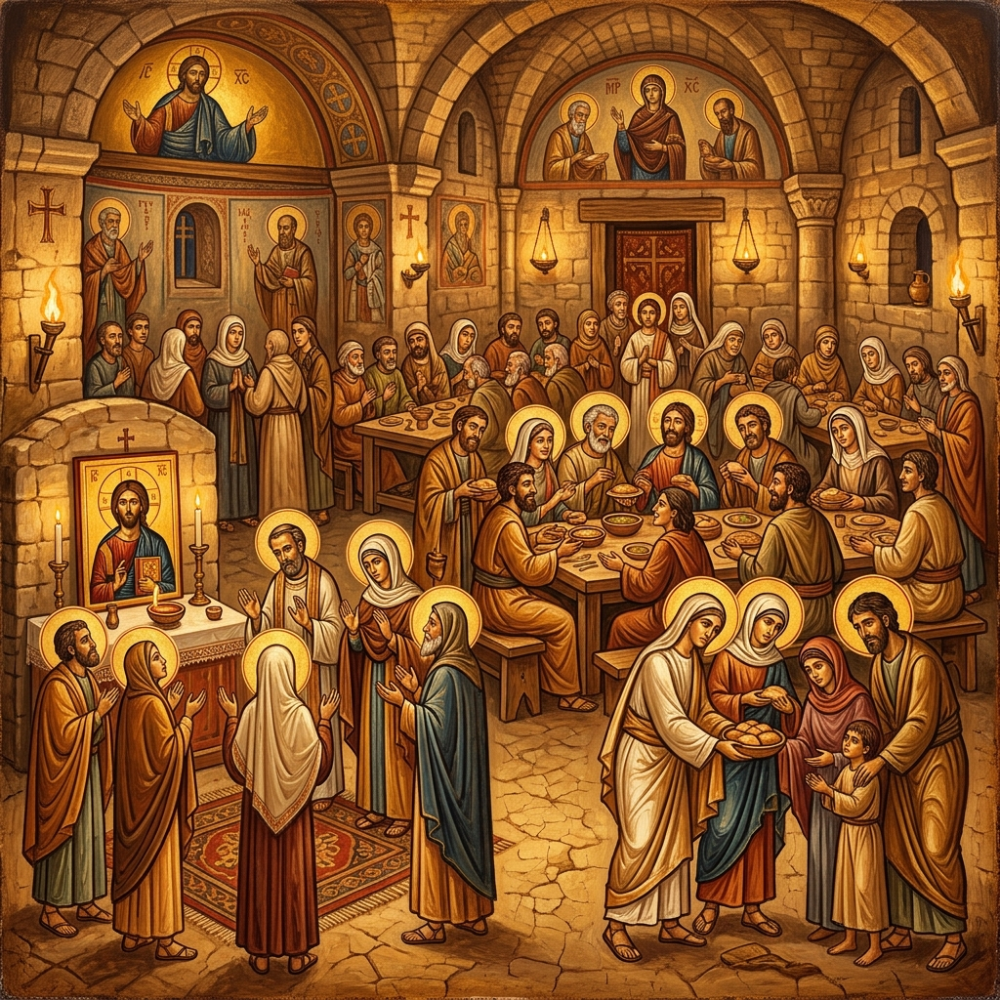
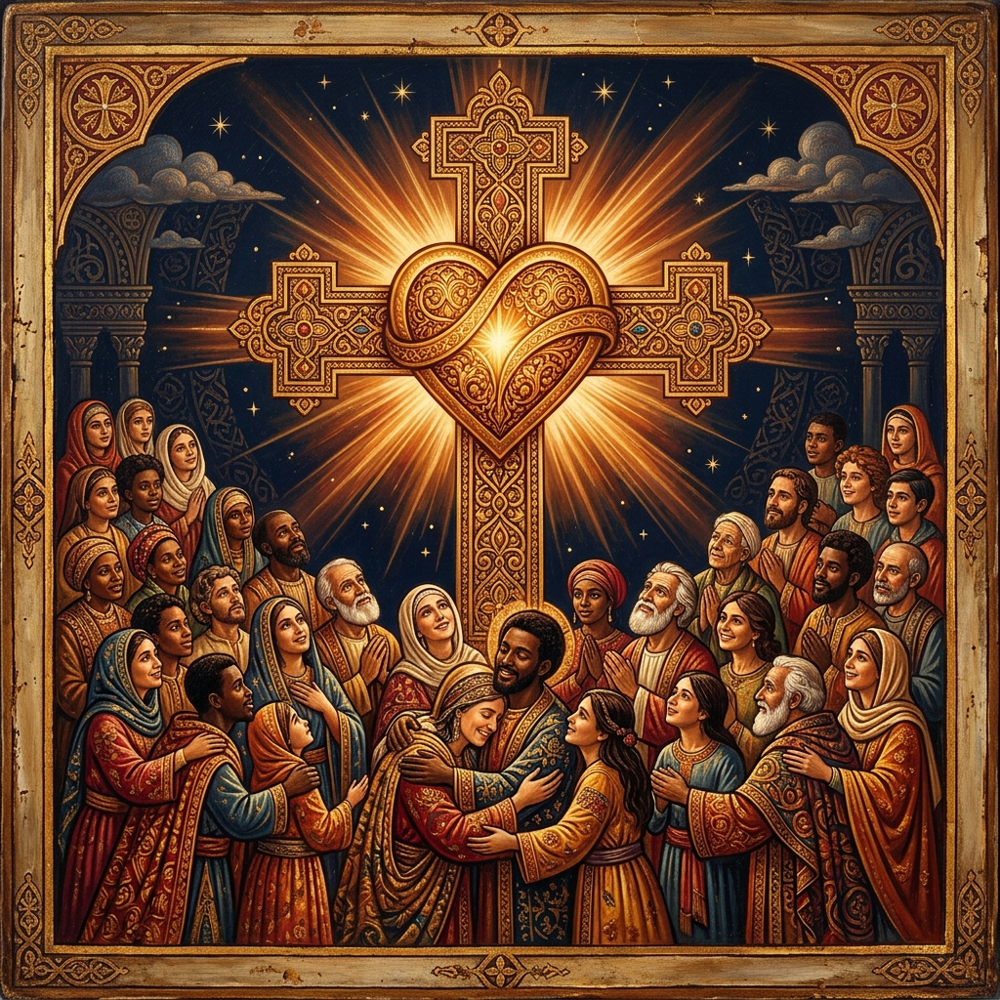
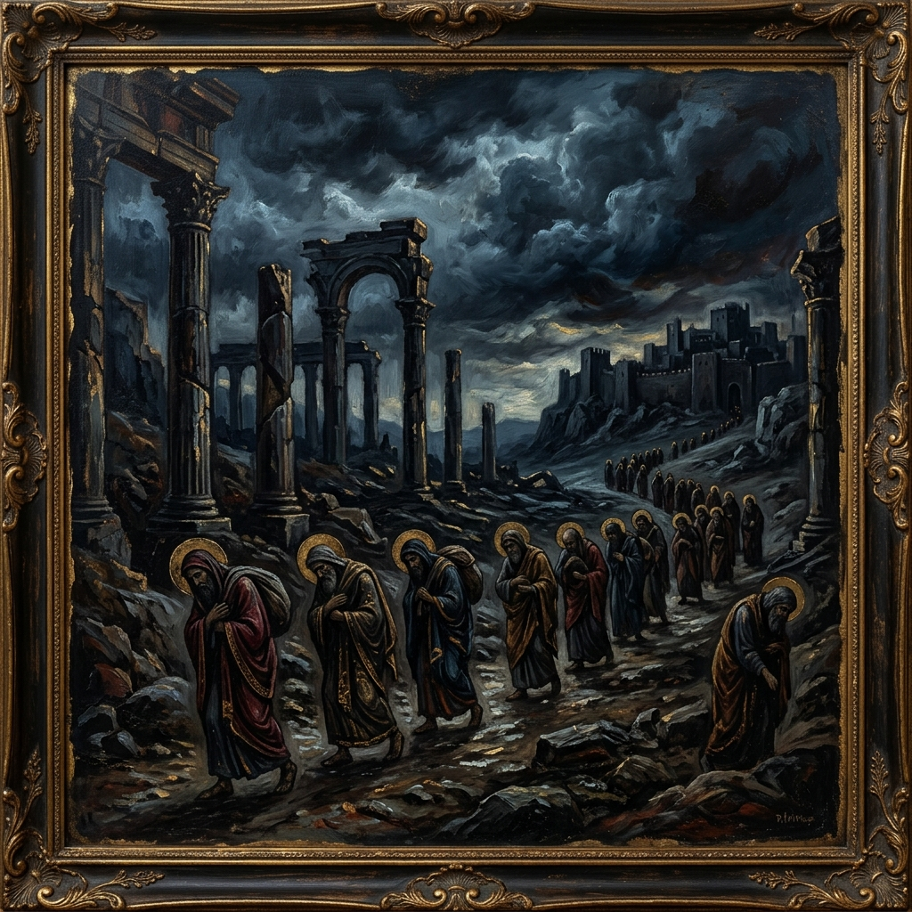
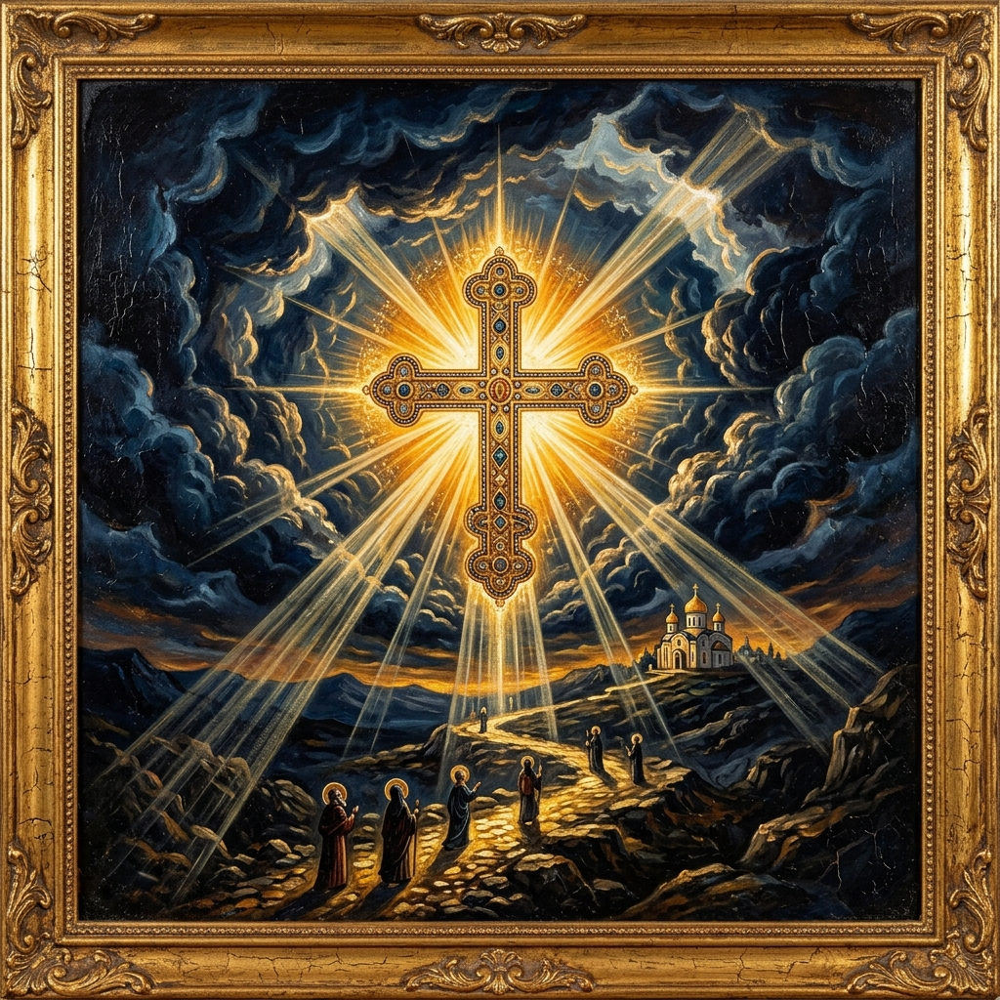
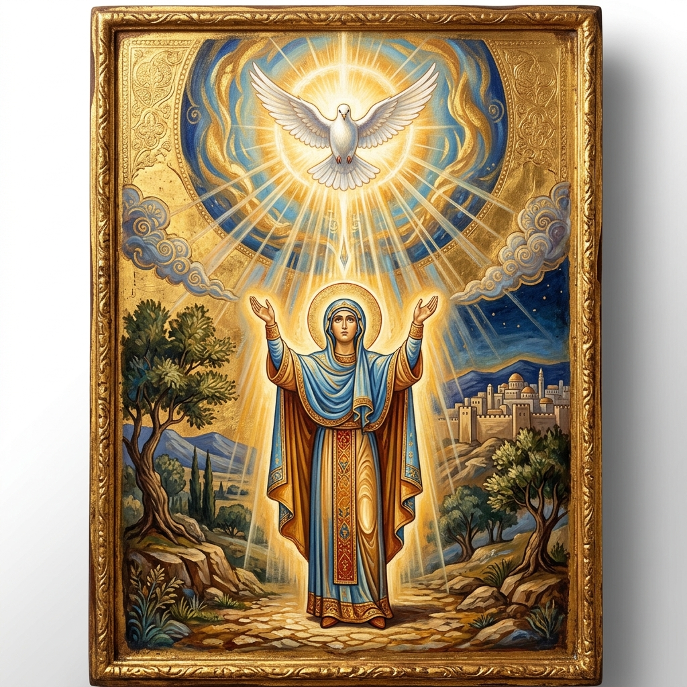
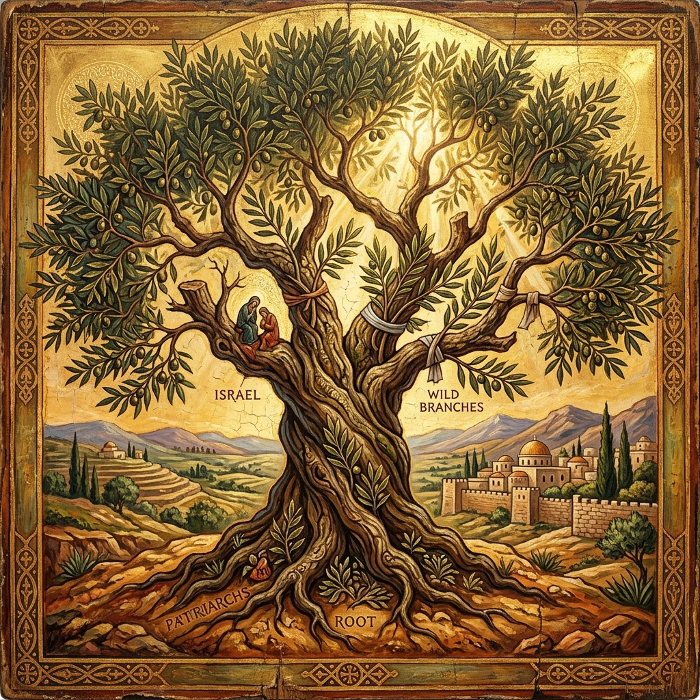

A Coptic Orthodox Study
Chapters 1 — 16
St. Paul's magnum opus on justification by faith, life in the Spirit, and the mystery of God's mercy — explored through the lens of the Church Fathers and the Coptic Orthodox Tradition.
At a Glance
Chapters 1–3
All have sinned — Gentile and Jew alike stand under God's righteous judgement. No one is justified by works of the law, for "there is none righteous, no, not one."
Chapters 3–5
Righteousness comes through faith in Jesus Christ. Abraham believed God and it was counted to him as righteousness. We are justified freely by grace through the redemption in Christ.
Chapters 6–8
Baptised into Christ's death and resurrection, we walk in newness of life. The Spirit sets us free from the law of sin and death. Nothing can separate us from the love of God.
Chapters 9–11
God has not rejected His people. The Gentiles are grafted into the olive tree, and all Israel shall be saved. "Oh, the depth of the riches both of the wisdom and knowledge of God!"
Chapters 12–13
Present your bodies as a living sacrifice. Be transformed by the renewing of your mind. Love fulfils the law. Put on the Lord Jesus Christ.
Chapters 14–16
Receive one another as Christ received you. Bear with the weak. Paul's greetings to the Church in Rome and his doxology: "To God, alone wise, be glory through Jesus Christ forever."
Apostolic Context
The Apostle
A Pharisee transformed by the risen Christ on the road to Damascus. Called to be the Apostle to the Gentiles, Paul wrote Romans as the fullest expression of the Gospel he preached.
c. 5–67 ADThird Missionary Journey
Paul wrote Romans during his third missionary journey, while staying in Corinth for three months. He entrusted the letter to Phoebe, a deaconess of the church at Cenchreae (Romans 16:1–2).
c. 57 AD
The Church in Rome
The Roman church was founded by Jewish Christians and grew to include Gentile converts. Paul addressed tensions between the two groups — a central concern of the epistle.
c. 49–57 ADPaul's Arrival
After his arrest in Jerusalem and appeal to Caesar, Paul finally arrived in Rome in chains — yet he preached the Gospel freely for two years under house arrest (Acts 28:30–31).
c. 60 ADThe Coptic Connection
Tradition holds that St. Mark, a companion of Paul (Colossians 4:10), founded the Church of Alexandria around 43 AD. The Coptic Church's theology is deeply shaped by Paul's epistle, especially through Alexandrian commentators.
c. 43 AD onwards
Martyrdom
"I have fought the good fight, I have finished the race, I have kept the faith" (2 Timothy 4:7). St. Paul was martyred in Rome under Emperor Nero, sealing his apostolic witness with his blood.
c. 67 ADIn-Depth Study

Chapters 1–3
Paul begins with a devastating diagnosis of the human condition. The Gentiles, though they knew God through creation, suppressed the truth in unrighteousness and were given over to degrading passions. The Jews, who received the Law, are equally condemned — for "all who have sinned under the law will be judged by the law."
The conclusion is universal and absolute: "All have sinned and fall short of the glory of God" (3:23). No one — Jew or Gentile — can be justified by works of the law. The law reveals sin but cannot cure it. This sets the stage for the Gospel of grace.
"For the wrath of God is revealed from heaven against all ungodliness and unrighteousness of men, who suppress the truth in unrighteousness."
Romans 1:18
"For all have sinned and fall short of the glory of God, being justified freely by His grace through the redemption that is in Christ Jesus."
Romans 3:23–24

Chapters 3–5
The heart of Paul's Gospel: righteousness is received through faith in Jesus Christ, not earned by works. Abraham is the model — he "believed God, and it was accounted to him for righteousness" (4:3), before the law was given and before circumcision. Grace precedes law.
Chapter 5 unfolds the fruits of justification: peace with God, access to grace, hope that does not disappoint, and the love of God poured into our hearts by the Holy Spirit. Paul introduces the Adam-Christ typology — where Adam's sin brought death to all, Christ's obedience brings life to all.
"Therefore, having been justified by faith, we have peace with God through our Lord Jesus Christ, through whom also we have access by faith into this grace in which we stand."
Romans 5:1–2
"But God demonstrates His own love toward us, in that while we were still sinners, Christ died for us."
Romans 5:8

Chapters 6–8
In baptism, we are buried with Christ and raised to newness of life (6:3–4) — the Coptic baptismal liturgy draws directly from this passage. Chapter 7 describes the agonising struggle with sin: "The good that I will to do, I do not do." Chapter 8 is the glorious answer — the Spirit of life in Christ Jesus sets us free.
Romans 8 is the summit of the epistle: no condemnation for those in Christ, the Spirit intercedes with groanings, all things work together for good, and nothing — neither death nor life, nor angels nor principalities — can separate us from the love of God in Christ Jesus our Lord.
"Do you not know that as many of us as were baptised into Christ Jesus were baptised into His death? Therefore we were buried with Him through baptism into death, that just as Christ was raised from the dead… even so we also should walk in newness of life."
Romans 6:3–4
"There is therefore now no condemnation to those who are in Christ Jesus, who do not walk according to the flesh, but according to the Spirit."
Romans 8:1

Chapters 9–11
Paul wrestles with the mystery of Israel's unbelief. God's word has not failed — for "they are not all Israel who are of Israel" (9:6). God's sovereign mercy extends to whomever He wills. Israel stumbled over the "stumbling stone" — Christ Himself — pursuing righteousness by works rather than by faith.
Yet God has not rejected His people. A remnant remains by grace. The Gentiles, wild olive branches, have been grafted into the cultivated olive tree of God's covenant people. Paul's climactic revelation: "All Israel will be saved" (11:26). The chapter ends with a doxology of awe: "Oh, the depth of the riches both of the wisdom and knowledge of God!"
"And if some of the branches were broken off, and you, being a wild olive tree, were grafted in among them, and with them became a partaker of the root and fatness of the olive tree, do not boast against the branches."
Romans 11:17–18
"Oh, the depth of the riches both of the wisdom and knowledge of God! How unsearchable are His judgements and His ways past finding out!"
Romans 11:33
Chapters 12–13
From theology to practice: "Present your bodies a living sacrifice, holy, acceptable to God" (12:1). Be transformed by the renewing of your mind. Paul describes the Body of Christ — each member with different gifts, all serving in love. Bless those who persecute you. Overcome evil with good.
Chapter 13 addresses submission to governing authorities as servants of God, and concludes with the supreme ethic: "Love does no harm to a neighbour; therefore love is the fulfilment of the law" (13:10). Paul urges: "Put on the Lord Jesus Christ, and make no provision for the flesh."
"I beseech you therefore, brethren, by the mercies of God, that you present your bodies a living sacrifice, holy, acceptable to God, which is your reasonable service. And do not be conformed to this world, but be transformed by the renewing of your mind."
Romans 12:1–2
"Love does no harm to a neighbour; therefore love is the fulfilment of the law."
Romans 13:10
Chapters 14–16
Paul addresses practical divisions in the Roman church — disputes over food and holy days. His principle: "The kingdom of God is not eating and drinking, but righteousness and peace and joy in the Holy Spirit" (14:17). We must bear with the weaknesses of others and not please ourselves, following Christ's example.
Chapter 16 contains Paul's personal greetings to over 25 individuals — including Phoebe the deaconess, Priscilla and Aquila, and many others. The epistle closes with a majestic doxology: "Now to Him who is able to establish you… to God, alone wise, be glory through Jesus Christ forever. Amen."
"Therefore receive one another, just as Christ also received us, to the glory of God."
Romans 15:7
"Now to Him who is able to establish you according to my gospel and the preaching of Jesus Christ… to God, alone wise, be glory through Jesus Christ forever. Amen."
Romans 16:25–27
The Summit of the Epistle
The climax of Paul's argument — from the certainty of God's purpose to the impossibility of separation from His love. These verses are among the most beloved in all of Scripture.
"And we know that all things work together for good to those who love God, to those who are the called according to His purpose."
Romans 8:28
God foreknew, predestined, called, justified, and glorified His people — an unbreakable chain of grace. The Coptic Church reads this not as fatalism, but as God's loving foreknowledge working with human free will.
"If God is for us, who can be against us?" He who did not spare His own Son — how shall He not freely give us all things? Christ intercedes for us at the right hand of the Father.
"Neither death nor life, nor angels nor principalities… nor any other created thing, shall be able to separate us from the love of God which is in Christ Jesus our Lord."
The Coptic Church reads Romans 8 as the foundation of Christian assurance — not a guarantee of sinlessness, but a promise that God's love is unconquerable. St. John Chrysostom says of this passage: "Paul does not say 'who shall separate us from Christ?' but 'from the love of Christ' — showing that the love itself is the bond." This love sustains the martyrs, the ascetics, and every believer who endures tribulation.
Pauline Typology
The great typological contrast at the heart of Pauline soteriology — the first Adam who brought death, and the Second Adam who brings life. This passage is central to the Coptic Orthodox understanding of salvation.
Through one man's disobedience, sin entered the world, and death through sin. Death spread to all men because all sinned. The reign of death — from Adam to Moses — witnesses to the universal corruption of human nature.
Through one Man's obedience, the many are made righteous. The free gift abounds much more than the trespass. Where sin increased, grace abounded all the more — so that grace might reign through righteousness to eternal life.
"For as by one man's disobedience many were made sinners, so also by one Man's obedience many will be made righteous."
Romans 5:19
The Coptic Church, following St. Athanasius and St. Cyril of Alexandria, teaches that Christ is the New Adam who recapitulates and heals human nature. In His Incarnation, the Logos united Himself to our fallen nature — not merely to forgive sins externally, but to heal and restore humanity from within. As St. Athanasius writes in On the Incarnation: "He became man that we might become divine." This is why the Coptic liturgy proclaims Christ as the one who "abolished death by death."
Comparative Reference
| Theme | Chapters | Key Verse | Coptic Tradition |
|---|---|---|---|
| Universal Sin | 1–3 | "All have sinned and fall short of the glory of God" (3:23) | The Fall affects all humanity — the need for the Incarnation |
| Justification by Faith | 3–5 | "Justified freely by His grace" (3:24) | Faith and works together — synergy of grace and human response |
| Baptism & New Life | 6 | "Baptised into His death… walk in newness of life" (6:3–4) | Triple immersion in the Coptic baptismal rite |
| Life in the Spirit | 8 | "No condemnation to those who are in Christ Jesus" (8:1) | The Holy Spirit as Sanctifier — Chrismation after baptism |
| Israel & the Church | 9–11 | "Oh, the depth of the riches!" (11:33) | The Church as the New Israel, grafted into the covenant |
| Transformation | 12 | "Be transformed by the renewing of your mind" (12:2) | Theosis — the ongoing transformation into Christ's likeness |
| Love Fulfils the Law | 13 | "Love is the fulfilment of the law" (13:10) | Love as the summary of all Christian ethics |
Patristic Witnesses
"When Paul says 'justified freely by His grace,' he shows at once God's power and God's love. His power, because He found a way to justify the sinner; His love, because He did so by giving His own Son as the price."
— Homilies on Romans, Homily 7, on Romans 3:24
"We are justified not by works of the law but by faith — yet not faith alone, for this would be idle. Rather, faith working through love, as the Apostle says elsewhere. Faith is the root, and love is the fruit; neither can exist in truth without the other."
— Commentary on Romans, on Romans 3:28
"For He was made man that we might be made divine; and He manifested Himself by a body that we might receive the idea of the unseen Father. The Saviour's death is the ransom of all, undoing the corruption that was spreading through human nature."
— On the Incarnation, §54 (cf. Romans 5:12–21)
"Paul speaks of being 'baptised into Christ's death' to show that baptism is not merely a washing of the body, but a participation in the Cross. In the waters we die to sin, and rising from them we are born anew — sharing in the power of Christ's resurrection."
— Commentary on Romans, Book 5, on Romans 6:3–4
"What the law of works commands with threats, the law of faith achieves by believing. The law says 'Do this'; faith says 'I believe that God gives the grace to do it.' Grace does not destroy the law but fulfils it — for love is the fulfilment of the law."
— The Spirit and the Letter, Ch. 22 (cf. Romans 13:10)
"The Epistle to the Romans is the Apostle's most systematic presentation of the Gospel. It moves from the darkness of universal sin, through the light of justification, into the glory of life in the Spirit. It is a journey from death to life — the journey of every baptised believer."
— Commentary on the Epistle to the Romans, Introduction